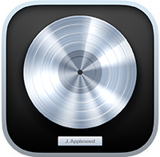

盛根大輝
MORINE DAIKI
Copyright © 2021 MORINE DAIKI All Rights Reserved.
ABOUT
IT企業デザイナーで、主にUI/UXデザインやコーディングをしています。
プロダクトの魅力を引き出せるようなデザインをし、素敵な体験をユーザーに届けられるよう日々学んでいます。
新しいものを作ることが大好きで、様々なデザインを副業でも経験したいと思っております。
【週5-10時間の土日中心】【フルリモート(埼玉から行ける範囲はたまに出社可)】で稼働できます。
下に載っているポートフォリオは学生時代に作成したものです。
Instagramに作品をマイペースに更新していこうと思っています。@oka_yu148
実務経験のあるアプリケーション／技術
-
illustrator
-
Photoshop
-
InDesign
独学で修学しているアプリケーション
-
HTML 5
-
CSS 3
-
SASS
-
JQuery
-
XD
趣味で使用しているアプリケーション
-

Logic Pro
-
After Effects
WORKS

ポートフォリオサイト
親譲りの無鉄砲で小供の時から損ばかりしている。小学校に居る時分学校の二階から飛び降りて一週間ほど腰を抜かした事がある。なぜそんな無闇をしたと聞く人があるかも知れぬ。別段深い理由でもない。新築の二階から首を出していたら、同級生の一人が冗談に、いくら威張っても、そこから飛び降りる事は出来まい。弱虫やーい。と囃したからである。小使に負ぶさって帰って来た時、おやじが大きな眼をして二階ぐらいから飛び降りて腰を抜かす奴があるかと云ったから、この次は抜かさずに飛んで見せますと答えた。（青空文庫より）
RESUME
| 学歴 | 南風原町立南星中学校 卒業 |
|---|---|
| 沖縄県立那覇工業高等学校 グラフィックアーツ科 卒業 | |
| 沖縄ウエル・スポーツ専門学校 WEBクリエイター科 修了 | |
| 職歴 | 有限会社 サン印刷 |
| 株式会社 吾妻印刷 | |
| 株式会社 ちとせ印刷 | |
| 資格 | 全国工業高等学校長協会主催 ワープロ検定3級 取得 |
| 全国工業高等学校長協会主催表計算検定3級 取得 | |
| 全国工業高等学校長協会主催 DTP検定1級 取得 | |
| 普通自動車免許 取得 | |
| サーティファイ主催 webクリエイター検定 上級 取得 |